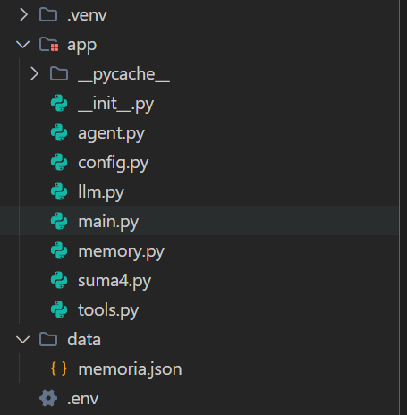
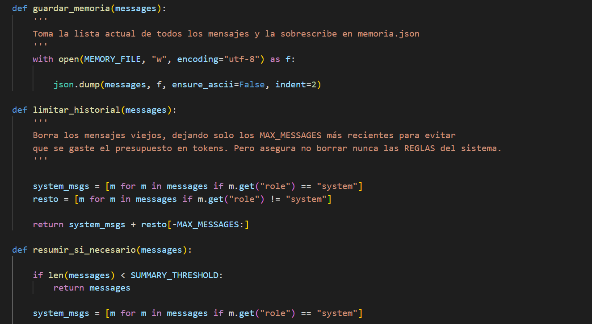
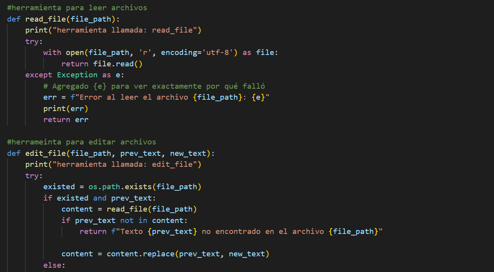
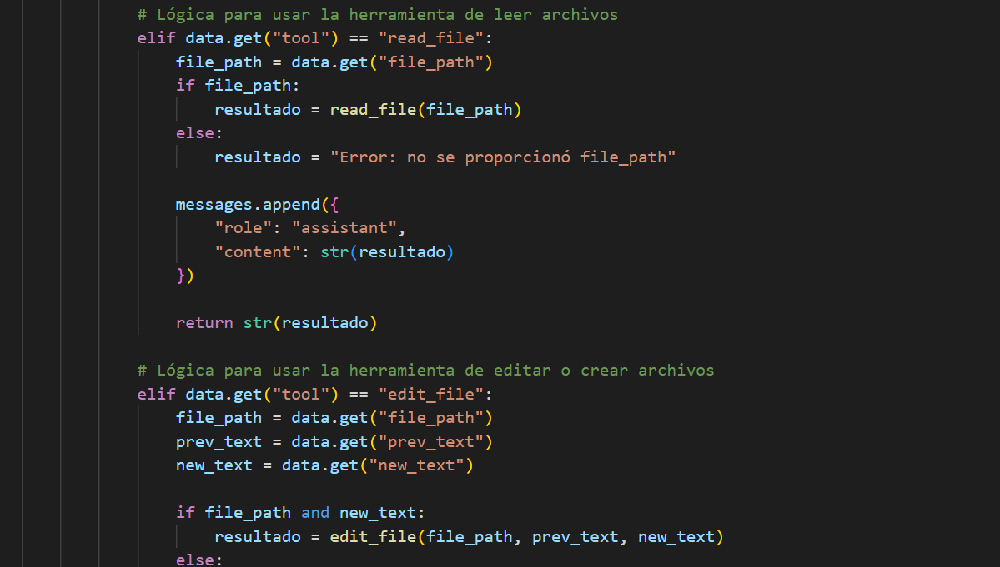
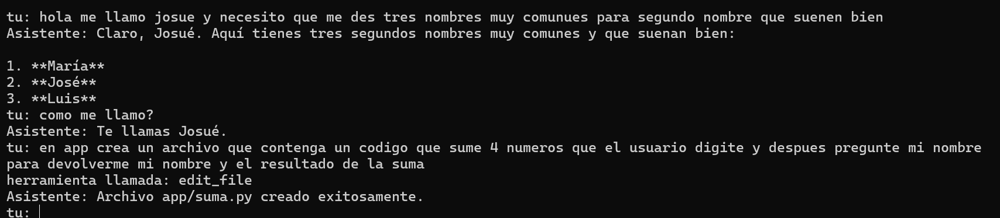
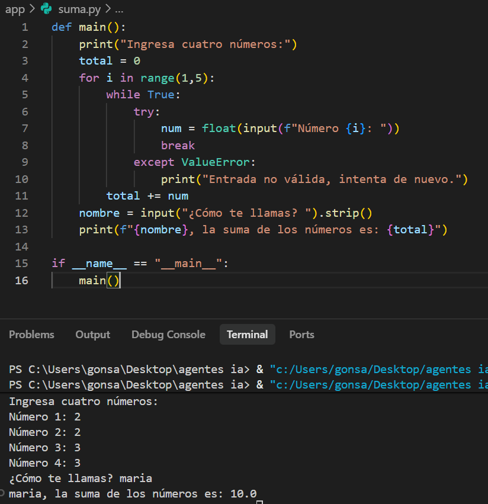
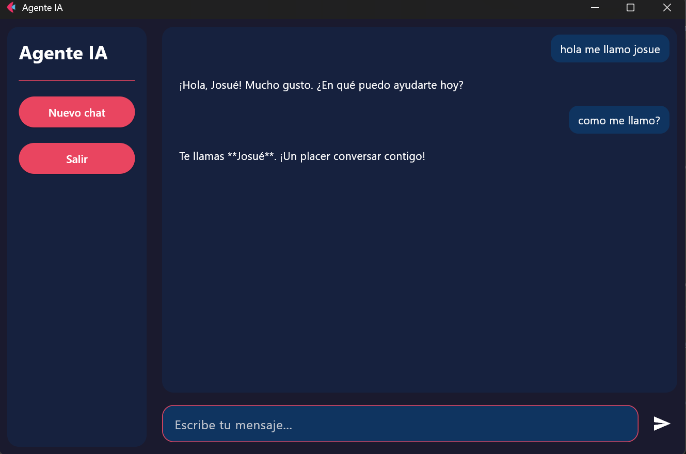

Portafolio
Agente IA: crea, edita archivos y codigo
Este proyecto representa el desarrollo de un agente de inteligencia artificial capaz de generar codigo funcional, modificar y crear archivos de forma autonoma, disenado completamente desde cero sin el uso de frameworks como LangChain ni tools automatizadas de terceros.
Solo se utiliza la API del modelo de lenguaje y Python, lo que permitio el entendimiento sobre su arquitectura, comportamiento y capacidades.

Arquitectura y Diseno del Sistema
El proyecto fue estructurado con un enfoque modular para garantizar orden, escalabilidad y mantenibilidad.
Se implemento una documentacion detallada y el uso de variables de entorno para una configuracion segura.
Como parte del proceso de aprendizaje, se desarrollo un sistema de memoria persistente basado en archivos JSON, permitiendo al agente mantener contexto entre ejecuciones.

Gestion Inteligente del Contexto
El agente incorpora un sistema de control del historial de conversacion.
Cuando se supera el limite de contexto, se ejecuta automaticamente un resumen inteligente, optimizando el uso de tokens sin perder informacion relevante.

Desarrollo de Herramientas Personalizadas
Todas las herramientas (tools) fueron disenadas e implementadas manualmente, permitiendo definir con precision como el agente interactua con el entorno.

Integracion de Capacidades al Agente
Las herramientas desarrolladas son registradas dinamicamente dentro del agente, habilitando la ejecucion de acciones especificas segun el contexto de la conversacion.

Toma de Decisiones Inteligente
El agente es capaz de mantener conversaciones naturales y, al mismo tiempo, decidir cuando utilizar herramientas externas, diferenciando entre respuestas conversacionales y acciones ejecutables.

Generacion Autonoma de Codigo
El agente puede crear archivos completos con codigo funcional, permitiendo automatizar tareas de desarrollo y acelerar la creacion de proyectos.
Resultado Final
Como resultado, el agente fue capaz de desarrollar su propia interfaz grafica de escritorio con Flet, demostrando un nivel avanzado de autonomia y aplicacion practica.
